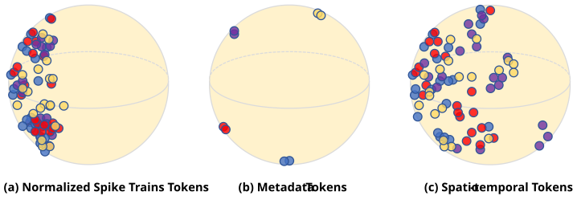
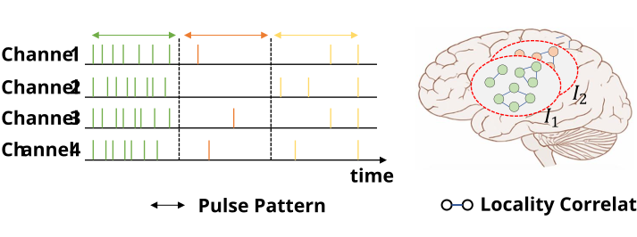
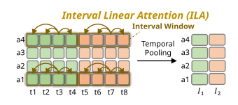
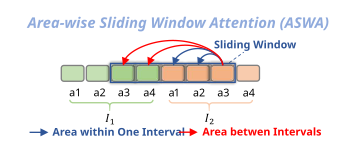
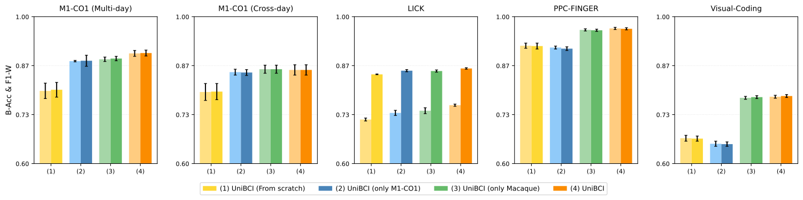
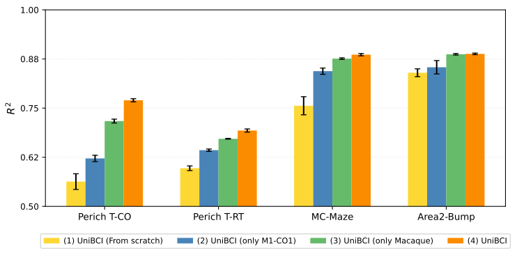
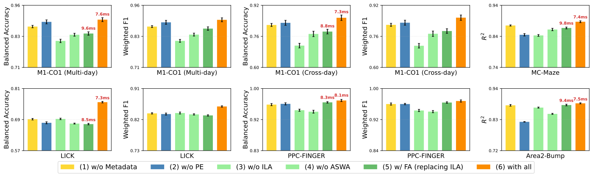
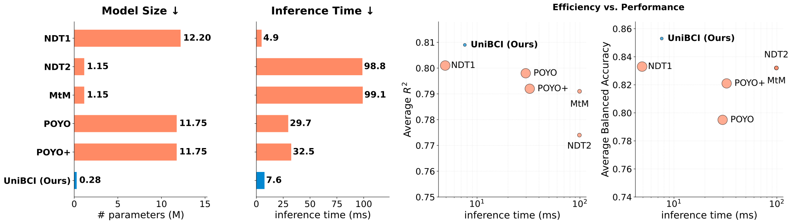

Abstract
Modeling invasive neural spike data is fundamental to advancing high-performance brain-computer interfaces (BCIs). However, existing approaches face critical challenges, including limited-scale heterogeneous data, cross-domain distribution shift, and the intrinsic spatiotemporal complexity of invasive neural signals. In this work, we propose UniBCI, a unified pretrained model for invasive Brain-Computer Interfaces. The model integrates three key components: (1) a context-conditioned spatio-temporal tokenization (CST) scheme that embeds neural signals together with metadata into a shared representation space; (2) a hierarchical Interval-Area Attention (IAA) mechanism that captures patterns of spike dynamics in slots via linear attention and locality dependencies via sliding-window attention; and (3) a scalable self-supervised masked signals reconstruction objective for learning generalizable neural representations from large-scale unlabeled data. We construct a pretraining corpus spanning multiple species, subjects, brain regions, and behavioral experiment paradigms. Comprehensive experiments demonstrate that UniBCI achieves SOTA performance across diverse downstream tasks while improving generalization, parameter efficiency, and lower inference latency.
Datasets Overview
| Dataset | Species | Brain Regions | Tasks | # Indiv. | # Sess. | Data Scale | |
|---|---|---|---|---|---|---|---|
| Pretraining | M1-CO1 | Macaque | M1 | CO | 1 | 348 | 17.5 hours |
| M1-CO2 | Macaque | M1 | CO | 1 | 29 | 17.8 hours | |
| Pac-Man | Macaque | PMd, dLPFC, ACC | Pacman | 1 | 121 | 109.5 hours | |
| HPC-HG | Macaque | HPC | Hidden Goal | 1 | 36 | 44.8 hours | |
| LICK | Mouse | M2, SNR, VLS | Licking | 11 | 104 | 74.1 hours | |
| Downstream | M1-CO1 (New Sess.) | Macaque | M1 | CO | 1 | 24 | 1.3 hours |
| LICK (New Indiv.) | Mouse | M2, SNR, VLS | Licking | 3 | 15 | 11.4 hours | |
| Visual-Coding | Mouse | VISp | Drifting Gratings | 17 | 17 | 45.6 hours | |
| PPC-FINGER | Human | PPC | Finger Press | 1 | 10 | 6.7 hours | |
| Perich | Macaque | M1, PMd | CO, RT | 1 | 12 | 2.5 hours | |
| MC-Maze | Macaque | M1, PMd | Maze | 1 | 1 | 1.9 hours | |
| Area2-Bump | Macaque | S1 | Bump | 1 | 1 | 0.6 hours |
Methodology
UniBCI captures complex spike dynamics across heterogeneous datasets by unifying neural signals and context metadata into a common embedding space, processed via stacked Interval-Area Attention (IAA) layers.
1. Context-conditioned Spatio-temporal Tokenization (CST)
To align multi-source neural data across species, subjects, and tasks, UniBCI embeds structural metadata into a natural language prompt:
- Signal Embedding: Spatiotemporal spike arrays are projected via shared linear weights $W_e$.
- Context Conditioning: Dense metadata representations $X_{\text{meta}}$ (via NLM) along with temporal ($T_{\text{pos}}$) and spatial ($A_{\text{pos}}$) positional embeddings are broadcast-added to yield unified tokens: $$\text{token} = X_{\text{emb}} \oplus X_{\text{meta}} \oplus T_{\text{pos}} \oplus A_{\text{pos}}$$

2. Interval-Area Attention (IAA) Mechanism
Standard self-attention suffers from quadratic complexity on long temporal sequences. To address non-stationary pulse dynamics and spatial locality correlations (Figure 2), IAA decouples attention into temporal intervals and spatial areas.


Interval Linear Attention (ILA)
Captures short-term temporal dynamics within each non-overlapping time interval $I_i$ ($t$ timesteps). Uses linear attention to accelerate computation without sacrificing sequence modeling capability.

Area-wise Sliding Window Attention (ASWA)
Applies temporal pooling over intervals and computes local spatial attention across adjacent brain areas/channels using a sliding window $w$, effectively capturing cross-interval spatial locality.
Experimental Results
We compare UniBCI with baseline methods across classification and regression tasks. Baselines trained from scratch include Wiener filters (WF), GRU, MLP, and NoMAD. Pretrained baselines include VAE, NDT1, NDT2, MtM, POYO, and POYO+. All pretrained models are fine-tuned under a full-parameter setting (learning rate $1 \times 10^{-4}$, batch size 64) with 80% data for training and 20% for testing.
| Generalization | Dataset | Metrics | From scratch | Pretrained | |||||||||
|---|---|---|---|---|---|---|---|---|---|---|---|---|---|
| WF | GRU | MLP | NoMAD | VAE | NDT1 | NDT2 | MtM | POYO | POYO+ | UniBCI (Ours) | |||
| Classification Tasks | |||||||||||||
| New Session | M1-CO1 (Multi-day) | B-Acc | 0.645±.008 | 0.806±.005 | 0.680±.006 | 0.848±.004 | 0.817±.005 | 0.885±.006 | 0.863±.003 | 0.854±.007 | 0.859±.003 | 0.892±.007 | 0.900±.008 |
| F1-W | 0.649±.007 | 0.808±.005 | 0.680±.006 | 0.850±.004 | 0.820±.005 | 0.886±.006 | 0.866±.002 | 0.855±.006 | 0.858±.003 | 0.893±.006 | 0.901±.008 | ||
| M1-CO1 (Cross-day) | B-Acc | 0.623±.012 | 0.739±.010 | 0.666±.008 | 0.821±.006 | 0.758±.009 | 0.830±.019 | 0.828±.013 | 0.843±.001 | 0.870±.007 | 0.860±.016 | 0.855±.014 | |
| F1-W | 0.624±.012 | 0.741±.009 | 0.660±.008 | 0.822±.006 | 0.756±.009 | 0.828±.019 | 0.828±.013 | 0.845±.012 | 0.870±.007 | 0.859±.016 | 0.855±.014 | ||
| New Subject | LICK | B-Acc | 0.655±.005 | 0.705±.004 | 0.662±.003 | 0.724±.003 | 0.685±.004 | 0.739±.001 | 0.745±.001 | 0.741±.002 | 0.729±.007 | 0.777±.002 | 0.759±.003 |
| F1-W | 0.792±.004 | 0.781±.003 | 0.851±.002 | 0.855±.002 | 0.843±.002 | 0.865±.000 | 0.865±.001 | 0.865±.001 | 0.854±.001 | 0.866±.000 | 0.859±.002 | ||
| New Specie | PPC-FINGER | B-Acc | 0.852±.006 | 0.894±.005 | 0.929±.004 | 0.717±.006 | 0.881±.005 | 0.962±.004 | 0.965±.001 | 0.950±.003 | 0.835±.007 | 0.870±.007 | 0.968±.003 |
| F1-W | 0.824±.006 | 0.894±.005 | 0.927±.004 | 0.719±.006 | 0.884±.005 | 0.960±.003 | 0.963±.002 | 0.951±.003 | 0.832±.008 | 0.870±.006 | 0.967±.003 | ||
| New Task | Visual-Coding | B-Acc | 0.737±.004 | 0.686±.006 | 0.754±.007 | 0.734±.005 | 0.698±.004 | 0.750±.004 | 0.759±.002 | 0.773±.005 | 0.680±.004 | 0.702±.008 | 0.782±.004 |
| F1-W | 0.729±.003 | 0.677±.005 | 0.751±.007 | 0.728±.005 | 0.670±.003 | 0.747±.004 | 0.757±.001 | 0.773±.005 | 0.678±.005 | 0.702±.007 | 0.784±.004 | ||
| Avg. B-Acc | 0.702 | 0.766 | 0.738 | 0.769 | 0.768 | 0.833 | 0.832 | 0.832 | 0.795 | 0.821 | 0.853 | ||
| Regression Tasks | |||||||||||||
| New Subject | Perich T-CO | $R^2$ | 0.580±.008 | 0.625±.006 | 0.682±.005 | 0.656±.006 | 0.716±.004 | 0.747±.002 | 0.706±.004 | 0.769±.002 | 0.756±.005 | 0.731±.007 | 0.770±.004 |
| New Task | Perich T-RT | $R^2$ | 0.559±.009 | 0.621±.007 | 0.613±.007 | 0.605±.008 | 0.629±.007 | 0.681±.003 | 0.633±.002 | 0.673±.002 | 0.693±.003 | 0.684±.006 | 0.693±.004 |
| MC-Maze | $R^2$ | 0.728±.006 | 0.773±.005 | 0.804±.004 | 0.795±.004 | 0.797±.004 | 0.884±.002 | 0.877±.001 | 0.868±.004 | 0.880±.005 | 0.879±.004 | 0.886±.003 | |
| New Region | Area2-Bump | $R^2$ | 0.724±.006 | 0.814±.004 | 0.778±.005 | 0.793±.004 | 0.797±.004 | 0.891±.003 | 0.878±.003 | 0.855±.007 | 0.862±.004 | 0.875±.003 | 0.888±.002 |
| Avg. $R^2$ | 0.648 | 0.708 | 0.719 | 0.712 | 0.735 | 0.801 | 0.774 | 0.791 | 0.798 | 0.792 | 0.809 | ||
UniBCI consistently improves performance across all evaluation scenarios, demonstrating strong generalization of its pretrained neural representations with effective transfer to new species, subjects, brain regions, and tasks. These gains are achieved with limited labeled data for fine-tuning, indicating that UniBCI’s context-aware embeddings and spatiotemporal hierarchical attention capture multi-scale neural dynamics and enhance robustness to domain shifts.
Ablation Studies
1. Effectiveness of Pretraining Corpus
We evaluate how pretraining strategies and data diversity affect UniBCI's generalization across four settings: (1) From scratch, (2) Pretraining on M1-CO1 only, (3) Multi-task macaque pretraining, and (4) Full cross-species pretraining.


- From-scratch baseline (1): Suffers substantial performance degradation, indicating that metadata embeddings remain poorly aligned without self-supervised pretraining.
- Single-task pretraining (2): Improves macaque motor tasks but fails to generalize to unseen domains (human PPC-FINGER) or sensory tasks (Visual-Coding).
- Macaque corpus expansion (3): Broadens functional coverage, uniformly boosting downstream tasks.
- Cross-species corpus (4): Further enriches the text-conditioned space, disentangling species-specific semantics from shared neural dynamics.
2. Structural Module Ablation
We evaluate the contributions of individual model components across benchmarks.

- (1) w/o Metadata: Performance drops across all datasets (e.g., -2.8% B-Acc on M1-CO1 Multi-day), proving contextual metadata helps mitigate domain shifts.
- (2) w/o Positional Encoding: Results drop by 4.2% and 6.5% on MC-Maze and Area2-Bump, emphasizing spatial/temporal order.
- (3) w/o ILA: Causes an 8.6% drop on M1-CO1 (Multi-day), showing its key role in capturing temporal patterns.
- (4) w/o ASWA: Consistent performance decline, highlighting global spatial dependency modeling.
- (5) Replacing ILA with Full Attention: Increases latency and drops performance, proving ILA offers superior inductive bias and efficiency.
Efficiency & Complexity
Trainable Params
0.28 M
~42x smaller than NDT1/POYO
Inference Latency
7.6 ms
Real-time capable
Avg $R^2$ Score
0.809
Highest performance
Avg Balanced Accuracy
0.853
Top classification accuracy
UniBCI incorporates a pretrained text encoder (22.7M parameters) that is frozen during training, introducing zero extra training cost.
- Model Compactness: With only 0.28M trainable parameters, UniBCI achieves extreme parameter efficiency compared to baselines like NDT1 (12.20M) and POYO (11.75M).
- Inference Efficiency: Maintains a highly competitive latency of 7.6 ms per sample, making it exceptionally well-suited for real-time invasive brain-computer interfaces.
- Optimal Trade-off: While NDT1 is slightly faster (4.9 ms), it suffers from degraded accuracy. UniBCI yields the best balance of speed, compactness, and decoding performance.

Conclusions
In this work, we introduced UniBCI: a lightweight, low-latency, and label-free framework for universal neural decoding. Unlike previous paradigms, UniBCI achieves all-around excellence across key dimensions, seamlessly integrating text-conditioned flexibility with robust cross-species generalization.
| Model | Lightweight | Low-latency | Behavior-free | Metadata-conditioned | Cross-species |
|---|---|---|---|---|---|
| NDT1 | ✕ | ✓ | ✓ | ✕ | ✕ |
| NDT2 | ✓ | ✕ | ✓ | ✕ | ✕ |
| POYO | ✕ | ✕ | ✕ | ✕ | ✕ |
| POYO+ | ✕ | ✕ | ✕ | ✕ | ✕ |
| UniBCI (Ours) | ✓ | ✓ | ✓ | ✓ | ✓ |
By combining lightweight design, real-time efficiency, and versatile task conditioning, UniBCI provides a foundational step towards flexible and deployment-ready brain-computer interfaces across diverse real-world scenarios.